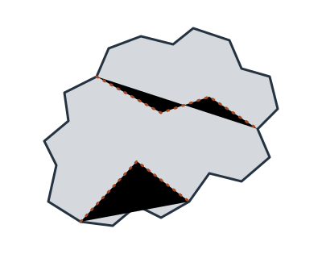

Manufacturers

Use the filter to show manufacturers by country, or search by name.
-
Bekaert
Country: Belgium (headquartered in Zwevegem)
A steel wire transformation and coatings company. Its fencing range includes barbed wire, and it developed the Bezinal zinc-aluminium coating used to protect steel wire from corrosion.
-
Betafence
Country: Belgium (headquartered in Zwevegem)
A perimeter security and fencing company with Belgian roots in the Bekaert group, now independent. It supplies wire-based security fencing systems.
No manufacturers match. Try another country or clear the search.
This list is intentionally limited to details we are certain of. See Sources.